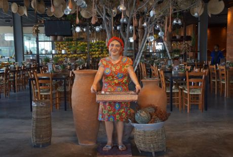

Somos o Oxente, um restaurante especializado em comidas nordestinas, com receitas trazidas diretamente do sertão pela nossa família.
Fazemos os melhores tipos de pratos típicos, em especial a tapioca, o Acarajé Baiano, o Mungunzá, e o irresistível Baião de Dois.
Estamos no mercado desde 1994 e, por isso, somos um dos restaurantes mais tradicionais da cidade de Fortaleza.
Estamos localizados no Shopping RioMar, de onde enviamos nossos produtos para atender aos clientes localizados em todas as regiões da cidade de Fortaleza, Ceará.
Nossos pratos são diferenciados, pois utilizamos as melhores matérias-primas. Nossa equipe, principalmente os cozinheiros, é especializada em receitas que foram desenvolvidas e aprimoradas pelo nosso restaurante ao longo de mais de 25 anos de história.
Nosso objetivo é oferecer para você comidas típicas mais gostosas, fresquinhas e saborosas de Fortaleza, agora entregue no seu endereço, pelo nosso serviço de delivery, em parceria com o iFood e o Uber Eats!
-
